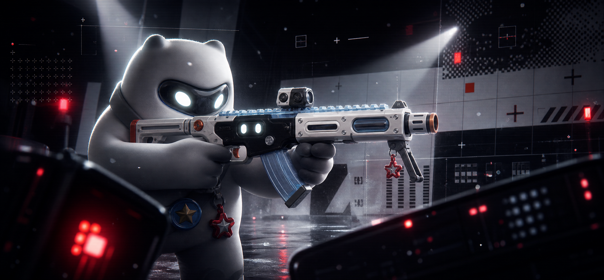

Immersive visual archive
Here forthe unseen
把影像、IP、空间与叙事压进同一个入口，先让画面成为作品集的第一句话。
Explore projects ↘Immersive visual archive
把影像、IP、空间与叙事压进同一个入口，先让画面成为作品集的第一句话。
Explore projects ↘Signal map · index footer
把 World、IP Doorway、Wrapped 和项目案例连成一张动线图：每个入口都可以被点亮，也都能回到作品集主叙事。
02 · Tactical Parallax · sightline + mouse
枪械、角色、灯束与 HUD 分层漂移，鼠标靠近时警示点轻微亮起。
滚动推进景深，让画面像一块可探索的现场监控界面。

04 · Tangyuan Storyboard · 21:9 sequence
Storyboard reel
拖拽或横向滑动浏览汤圆分镜，让角色动作、镜头节奏和世界观气质像一条可探索的宽银幕胶片。
一家品牌、数字和动态影像工作室
致力于创造耳目一新的视觉体验
帮助大胆的品牌被看见。
一家品牌、数字和动态影像工作室
致力于创造耳目一新的视觉体验
帮助大胆的品牌被看见。